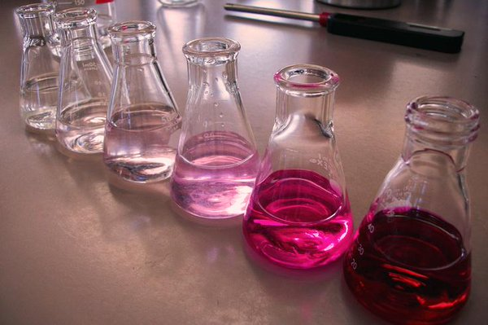

Courses Required
All courses required must be passed with a letter grade of a C or higher...
Biology
Texas medical school's require 14 total semester hours of Biological Science lecture and lab. That's 12 hours of lecture, and 2 hours of lab recommended per semester. Up to 2 years of Biology are required for science majors.
An example of some courses that are considered Biology credit acceptable include...
Courses that are upper level and are used towards medical or health career majors do not count.
General Chemistry I and II
General Chemistry I and II are to be taken as both lecture and lab courses. A student is expected to attain at least 15 credit hours of Chemistry, and maintain an average of C or better.
This includes...